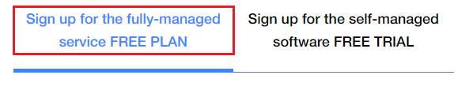
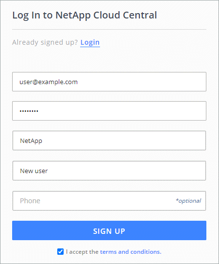

Google 클라우드
Google 클라우드
 Microsoft Azure를 참조하십시오
Microsoft Azure를 참조하십시오
 문서 변경 요청
문서 변경 요청 이 페이지 편집
이 페이지 편집 기여하는 방법 자세히 알아보기
기여하는 방법 자세히 알아보기Astra Control Service 계정에 등록하십시오
기여자
Astra Control Service를 사용하려면 NetApp Cloud Central 계정과 연결된 Astra Control Service 계정이 필요합니다. Astra Control Service 등록 프로세스를 완료한 후 Cloud Central 계정이 없는 경우 Cloud Central에 등록하여 Astra Control Service에 액세스하십시오.
Astra Control 계정에 등록하십시오
Astra Control Service에 로그인하기 전에 등록 프로세스를 완료하여 Astra Control Service 계정을 얻어야 합니다.
Astra Control Service를 사용하면 계정 내에서 앱을 관리할 수 있습니다. 계정에는 계정 내에서 앱을 보고 관리할 수 있는 사용자와 청구 세부 정보가 포함됩니다.
-
Astra Control 시작하기 * 를 선택합니다.
-
무료 요금제 * 탭을 선택합니다.

-
양식에 필요한 정보를 입력합니다.
양식을 작성할 때 주의해야 할 몇 가지 중요한 사항은 다음과 같습니다.
-
글로벌 무역 규정 준수 요구 사항을 충족하는지 확인하기 때문에 귀하의 상호와 주소는 정확해야 합니다.
-
Astra 계정 이름 * 은 귀사의 Astra Control Service 계정 이름입니다. 이 이름은 Astra Control Service 사용자 인터페이스에서 확인할 수 있습니다. 필요한 경우 추가 계정(최대 5개)을 만들 수 있습니다.
-
NetApp Cloud Central 계정이 있는 경우 * 비즈니스 이메일 주소 * 필드에 해당 계정에 사용하는 이메일을 여기에 입력합니다. 아직 NetApp Cloud Central 계정이 없는 경우 Cloud Central에 등록할 때 여기에 입력한 이메일 주소를 사용하십시오.
-
-
제출 * 을 선택합니다.
Cloud Central에 가입하십시오
NetApp Cloud Central 계정이 없는 경우 Cloud Central에 등록하시면 Astra Control Service와 NetApp의 다른 클라우드 서비스에 액세스할 수 있습니다. Astra Control Service는 NetApp Cloud Central의 인증 서비스에 통합되어 있습니다. Cloud Central 계정이 이미 있고 등록을 완료한 경우 에 액세스할 수 있습니다 "Astra 제어 서비스" Cloud Central 자격 증명을 사용하여 직접 수행합니다.

|
Single Sign-On을 사용하여 회사 디렉터리(통합 ID)의 자격 증명을 사용하여 Cloud Central에 로그인할 수 있습니다. 자세한 내용은 로 이동하십시오 "Cloud Central 도움말 센터" 그런 다음 * Cloud Central 로그인 옵션 * 을 선택합니다. |
-
로 이동합니다 "NetApp Cloud Central에서".
-
오른쪽 상단에서 * 등록 * 을 선택합니다.
-
양식을 작성합니다.
여기에 입력한 전화 번호 및 이메일 주소가 앞의 무료 요금제 등록 양식에서 사용한 것과 동일한지 확인하십시오.
-
등록 * 을 선택합니다.
이러한 양식에 입력하는 이메일 주소는 NetApp Cloud Central 사용자 ID입니다. 새 Astra Control Service 계정에 가입하거나 Astra Control Service 관리자가 기존 Astra Control Service 계정에 귀하를 초대하는 경우 이 Cloud Central 사용자 ID를 사용하십시오. 
-
NetApp Cloud Central에서 이메일을 받을 때까지 기다립니다. 이메일 주소는 saas.support@netapp.com 이며 도착하는 데 몇 분 정도 걸릴 수 있습니다. 스팸 폴더를 확인하십시오.
-
전자 메일이 도착하면 전자 메일의 링크를 선택하여 전자 메일 주소를 확인합니다.
이제 Cloud Central 사용자 로그인이 활성화되었습니다.
등록이 완료되었으므로 에서 Cloud Central 자격 증명을 사용하여 Astra Control Service에 직접 액세스할 수 있습니다 https://astra.netapp.io.